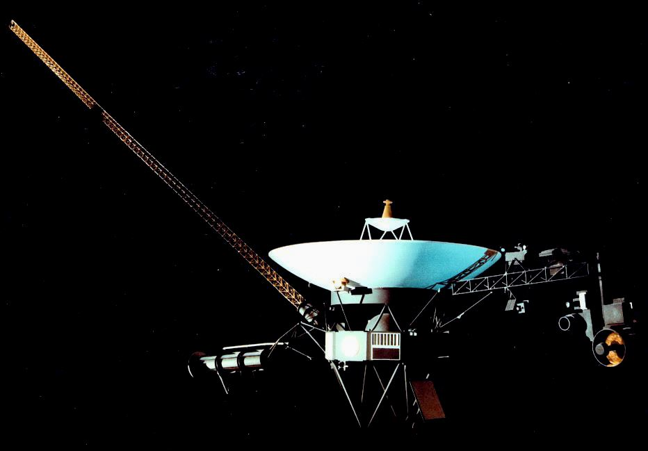
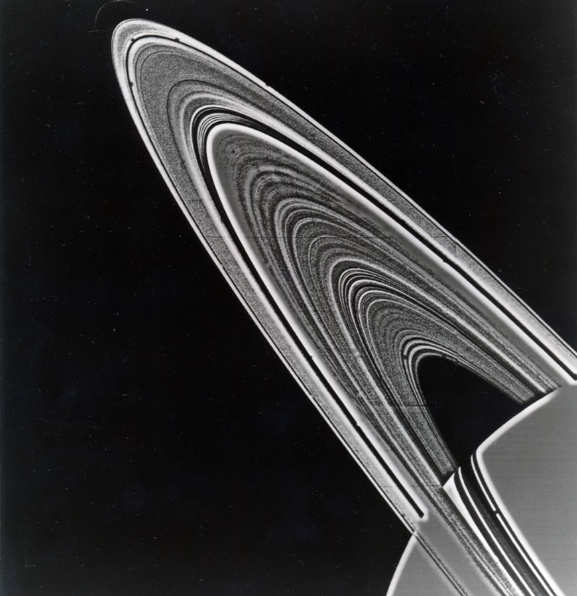
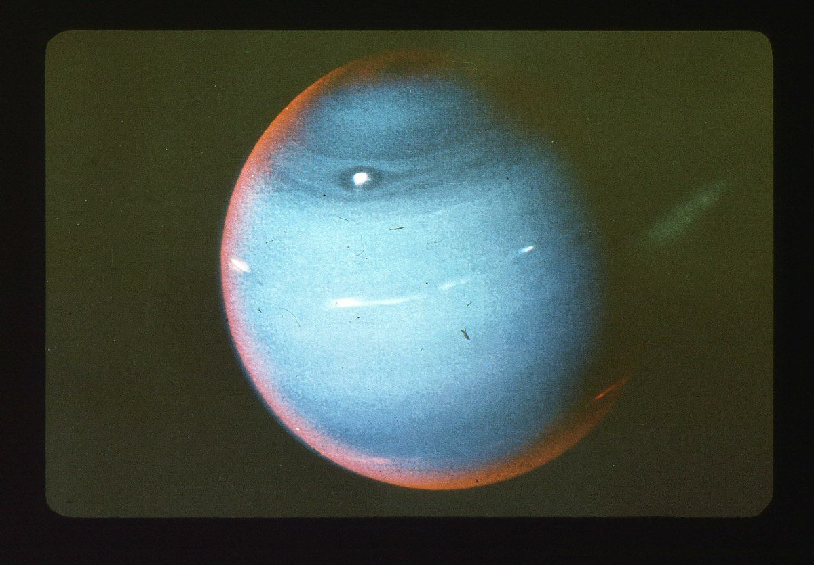

«Вояджер»
«Вояджер» — название двух американских космических зондов, запущенных в 1977 году, а также проекта по исследованию дальних планет Солнечной системы с участием аппаратов данной серии.
Всего было создано и отправлено в космос два аппарата серии «Вояджер»: «Вояджер-1» и «Вояджер-2». Аппараты были созданы в Лаборатории реактивного движения (англ. Jet Propulsion Laboratory — JPL) НАСА. Проект считается одним из самых успешных и результативных в истории межпланетных исследований — оба «Вояджера» впервые передали качественные снимки Юпитера и Сатурна, а «Вояджер-2» впервые достиг Урана и Нептуна. «Вояджеры» стали третьим и четвёртым космическими аппаратами, план полёта которых предусматривал вылет за пределы Солнечной системы (первыми двумя были «Пионер-10» и «Пионер-11»). Первым в истории аппаратом, достигшим границ гелиосферы и вышедшим за её пределы, стал «Вояджер-1».
Проект
Идея проекта впервые появилась в середине 1960-х, когда студент-интерн Гэри Флэндро рассчитал возможность достижения внешних планет с использованием гравитационного манёвра около Юпитера. В 1966 году он опубликовал работу, в которой обратил внимание, что в конце 1970-х годов представляется удачная возможность для облёта сразу четырёх внешних планет Солнечной системы (Юпитера, Сатурна, Урана и Нептуна) одним космическим аппаратом, благодаря их редкому сближению на орбитах.
В 1969 году НАСА выдвинуло амбициозный проект под названием «Grand Tour (Большое путешествие)», предусматривавший отправку двух космических аппаратов по траектории Юпитер — Сатурн — Плутон и ещё двух по траектории Юпитер — Уран — Нептун. Однако агентство не получило достаточного финансирования для его подготовки. В результате проект был пересмотрен: из него были официально исключены Уран, Нептун и Плутон, а число запусков сокращено до двух космических аппаратов хорошо отработанного класса «Mariner». Рабочее название программы «Mariner Jupiter-Saturn» было заменено на «Вояджер» незадолго до запуска.
Благодаря тому, что все планеты-гиганты удачно расположились в сравнительно узком секторе Солнечной системы («парад планет»),
было возможно использование гравитационных манёвров для облёта всех внешних планет, за исключением Плутона. Поэтому траектория полёта была рассчитана исходя из этой возможности,
хотя официально изучение Урана и Нептуна не вошло в программу миссии (для гарантированного достижения этих планет потребовалось бы строительство более дорогих аппаратов с
более высокими характеристиками по надёжности).
После того, как «Вояджер-1» успешно выполнил программу исследования Сатурна и его спутника Титана, было принято окончательное решение направить «Вояджер-2» к Урану и Нептуну.
Для этого пришлось слегка изменить его траекторию, отказавшись от близкого пролёта около Титана.
Космический аппарат «Вояджер-2», запущенный 20 августа 1977 года, пересёк в августе 2007 года границу Солнечной системы (точнее, гелиосферы). 10 декабря 2007 года NASA сообщило о результатах анализа данных, присланных «Вояджером».
Галерея

.webp)

